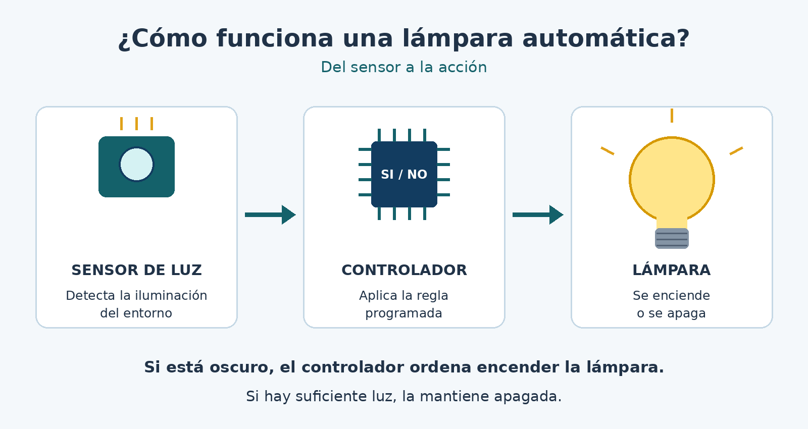

Sensor: detecta
Detecta una condición del entorno y la convierte en una señal que el sistema puede utilizar.
Ejemplos: sensores de luz, temperatura y movimiento.
Tecnología e Informática · Décimo
Descubre cómo la tecnología detecta, decide y actúa. Explora los sensores que dan vida a un hogar inteligente.
Sensor → Controlador → Actuador
En este sitio descubrirás cómo los sensores detectan cambios, los controladores procesan información y los actuadores realizan acciones.
Nuestro objetivo es explicar estos conceptos con ejemplos sencillos, una simulación y un cuestionario.
Estudiante: JOSTIN DAVID ZAMBRANO DAVILA
Grado: Décimo
Empezar a aprenderIoT significa Internet de las cosas. Permite conectar objetos a una red para compartir datos, supervisarlos o controlarlos. Por ejemplo, una cámara que podemos consultar desde el celular.
Un sistema automático puede funcionar sin internet. Para convertirlo en un sistema IoT, podemos añadir una conexión de red para compartir información o permitir el control remoto.
Detecta una condición del entorno y la convierte en una señal que el sistema puede utilizar.
Ejemplos: sensores de luz, temperatura y movimiento.
Recibe información y ejecuta las instrucciones programadas para determinar qué debe hacer el sistema.
Ejemplos: un microcontrolador o un PLC.
Ejecuta una acción física como producir luz, mover una puerta o abrir una válvula.
Ejemplos: lámpara, motor y electroválvula.
Como comparación educativa, nuestros sentidos se parecen a los sensores; el cerebro, al controlador; y los músculos, a los actuadores.

Un ventilador puede encenderse cuando sube la temperatura. Una lámpara puede encenderse cuando oscurece. Una puerta puede abrirse al detectar la llegada de una persona.
IoT puede facilitar tareas y permitir la supervisión remota. Debemos proteger los dispositivos con contraseñas seguras y mantenerlos actualizados.
El sistema pierde la medición de esa condición del entorno. Por ejemplo, no podría saber si está oscuro mediante el sensor de luz.
En el sistema que estamos estudiando, faltaría el componente que procesa la información y aplica las instrucciones.
El sistema podría detectar y procesar información, pero no realizaría la acción física prevista. Por ejemplo, no encendería la lámpara.
No. La automatización ejecuta acciones según reglas. IoT añade conectividad para intercambiar información entre dispositivos y otros sistemas.
Cambia la iluminación del entorno. El programa encenderá la lámpara cuando selecciones oscuridad.
Esta es una simulación: no está conectada a un sensor físico. En un sistema real, un sensor de luz mediría la iluminación.
Cambia las condiciones del entorno y descubre cómo responden los sistemas automáticos.
Mueve la barra. La lámpara se encenderá si la iluminación baja del 40 %.
Para esta simulación, si el sensor se desconecta, el controlador deja la lámpara apagada. Es una regla elegida para este ejemplo.
Cambia la temperatura. El ventilador se encenderá cuando supere los 28 °C.
Sensor: temperatura. Controlador: regla programada. Actuador: motor del ventilador. La temperatura la cambia el visitante; la simulación no calcula el enfriamiento de una habitación.
Las barras representan valores simulados. No reciben mediciones de sensores físicos.
Lee la descripción y elige si corresponde a un sensor, un controlador o un actuador.
Selecciona una respuesta por pregunta.
Después de explorar el sitio, comparte tu opinión sobre el contenido, el diseño y su funcionamiento.
El enlace a la encuesta se agregará durante la etapa de recolección de opiniones.